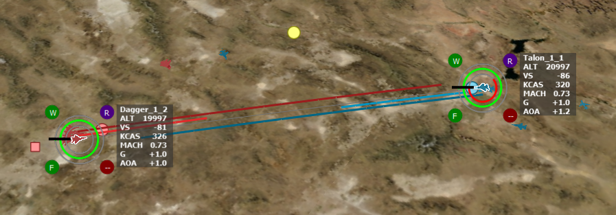
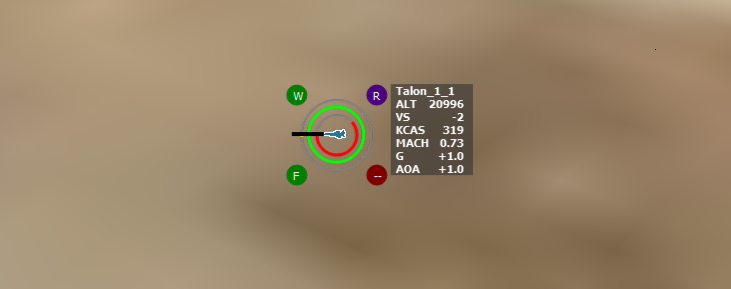
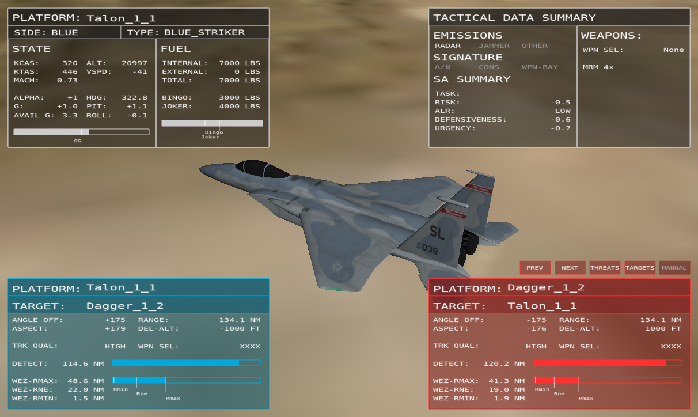
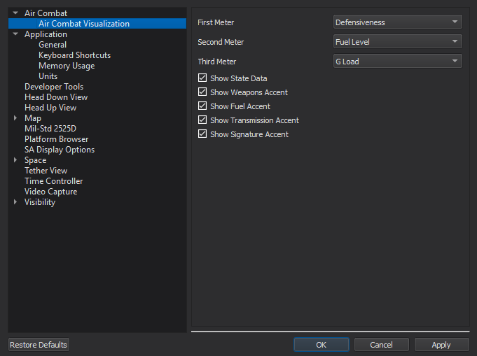

Air Combat Visualization - Mystic¶
The Air Combat Visualization plugin provides several methods of visualizing data related to air combat, including:
Data Rings
Data Accents
State Data
Detection/WEZ Lines
Air Combat Overlays
Data Rings, Data Accents, State Data, and Detection/WEZ Lines appear in the Map Display when a relevant platform is selected. A platform is considered relevant if it has a WSF_SA_PROCESSOR.
Data Rings¶
Data Rings, like the ones shown above, help to visualize certain air combat data. At the present time, three pieces of data can be measured by these rings: defensiveness, fuel level, and G Load. For defensiveness and fuel level, the black bar on the left of the ring represents 0.
Defensiveness is measured on a scale from -1 to 1. For a defensiveness of -1, a full red circle is displayed. For a defensiveness of +1, a full green circle is displayed. Positive values fill in a clockwise manner, while negative values fill in a counterclockwise manner.
Fuel level is measured on a scale from 0 to 1. Like the defensiveness ring, positive values are green and fill in a clockwise manner. Fuel level cannot be negative, however.
The G Load ring behaves a little differently, to reflect the unique aspects of the measurement. The black bar on the left represents 1 G (level flight), and the positive circle has a maximum range of 9 G. The negative circle has a maximum range of -3 G. Additionally, when the G Load is less than 1 G, but greater than 0 G, the circle turns yellow instead of green or red.
Data Accents¶
Data Accents provide meaningful information at a glance. Currently, there are four types of data accents:
Weapon State (top left)
Emissions (top right)
Fuel State (bottom left)
Signature (bottom right)
The Weapon State accent displays a “W” and changes color based on how many weapons remain on the platform. If the platform has at least half of its ammunition remaining, the accent is green. If the platform has less than half of its ammunition remaining, the accent is blue. If the platform has no ammunition remaining (Winchester), the accent is red.
The Emissions accent displays an “R” if a radar on the platform is emitting, a “J” if a jammer on the platform is emitting, or a “C” if it is transmitting communications. If a radar and a jammer are emitting, an “X” is displayed. If nothing is emitting, “–” is displayed.
The Fuel State accent is nominally green, and displays an F (fuel). If the fuel level is above 50 percent, it is green. When the fuel level goes below 50 percent, it becomes yellow. If the fuel level drops below 10 percent, it will become red. In addition, if a “joker” fuel state is reached, it will become blue, and it will become red if a “bingo” state is reached. Thus, the fuel accent will be red when either the fuel is below 10 percent or the bingo level has been reached.
The signature accent displays the following in order from least to most important:
If nothing is applicable, “–” is displayed.
A “C” is displayed if the platform is producing contrails.
An “A” is displayed if the platform is using afterburner(s).
A “W” is displayed if weapon bay doors are open.
Thus, if weapon bay doors were open and the platform was using afterburner, it would show a “W”, since that is deemed most important, and the most important item is shown.
In the above picture, we can see that the platform has at least half of its ammunition, is emitting a radar signal, has not yet reached joker or bingo, and is contrailing.
State Data¶
State Data provides relevant numerical data at a glance. From top to bottom, this data is:
Platform Name
Altitude (ALT) in feet
Vertical Speed (VS) in feet/minute
Speed (KCAS) in knots calibrated air speed
Mach
G Load (G)
Alpha, angle of attack (AOA) in degrees
Engagement Lines¶
On the Map Display or through the Platform Browser, selecting one platform will set that as the “source” platform. Selecting further platforms while holding CTRL will add those as “target” platforms. Between the source platform and each selected target, the lines above will appear. These lines consist of:
A thin, gray base line
A WEZ line from the source to the target
A WEZ line from the target to the source
A detection line from the source to the target
A detection line from the target to the source
These lines are colorized to match the platform they stem from.
WEZ (Weapon Engagement Zone) lines display, on a scale from 0 to 1, how close a platform is to being within range of another platform’s weapons. A value of 0 means the line will hardly show up, while a value of 1 means the line will connect to the opposing platform. The platform the WEZ line stems from is the platform whose WEZ is used in calculation (i.e. if the source platform is within the target’s WEZ and the target is not within the source platform’s WEZ, the WEZ line stemming from the target will connect to the source platform, but the WEZ line stemming from the source will not connect to the target platform).
Similarly, detection lines display how close a platform is to detecting another platform. A line that is connected to the opposing platform signals that the platform is within detection range.
Additionally, lines may blink to show additional data. The detection line blinks when the target is being tracked. The WEZ line blinks when within Rmax range.
Air Combat Overlays¶
On any Tether View that is tethered to a relevant platform, an Air Combat Overlay can be created by right-clicking and selecting “Add Air Combat Overlay.”
The overlay consists of four zones:
A state data block in the top left corner that displays various kinematic state data and fuel state data for the selected platform
A tactical data summary block in the top right corner that displays various tactical and weapons data for the selected platform
Two engagement data blocks in the bottom left and right corners
The engagement block in the bottom left uses the color of the “side” of the platform. For example, a blue platform will present with a blue color. This block displays engagement data for the source platform against the currently selected target. Similarly, the engagement block in the bottom right is colored based on side and displays engagement data for the current target against the source platform.
There are two targeting modes the overlay can use: automatic, which populates the overlay’s target list with designated targets from the source platform’s WSF_SA_PROCESSOR, and manual, which populates the overlay’s target list with targets selected in the Map Display or through the Platform Browser. The “Next” and “Prev” buttons above the right engagement block cycle through targets, while the “Auto/Manual” button changes the current targeting mode.
The Air Combat Overlay can be removed by right-clicking the Tether View and selecting “Remove Air Combat Overlay.”
Preferences¶
From the Preferences page, the data measured by the data rings can be changed. Additionally, the state data and data accents can be toggled on/off.